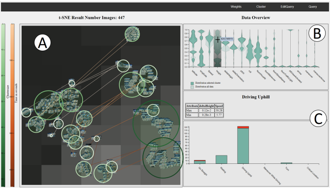

Caarvida: Visual Analytics for Test Drive Videos

AVI (2020) Full Paper
Authors
Alexander Achberger, Rene Cutura, Oguzhan Türksoy, Michael Sedlmair
Materials
Abstract
We report on an interdisciplinary visual analytics project wherein automotive engineers analyze test drive videos. These videos are annotated with navigation-specific augmented reality (AR) content, and the engineers need to identify issues and evaluate the behavior of the underlying AR navigation system. With the increasing amount of video data, traditional analysis approaches can no longer be conducted in an acceptable timeframe. To address this issue, we collaboratively developed Caarvida, a visual analytics tool that helps engineers to accomplish their tasks faster and handle an increased number of videos. Caarvida combines automatic video analysis with interactive and visual user interfaces. We conducted two case studies which show that Caarvida successfully supports domain experts and speeds up their task completion time.